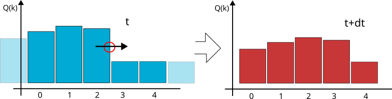

|
Peano
|
|
Peano
|
The finite volume method (FVM) is a discretization technique for PDEs, especially those that arise from physical conservation laws. FVM employs a volume integral formulation of the problem, utilizing a finite partitioning set of volumes to discretize the equations. Here we consider the following 1D example:

In the 1D illustration above, we have a patch with \( p=5 \) volumes, one quantity, and a halo of one. That is, we are given a \( Q_{in} \) with \( 7 \) values and return \( 5 \) new values for the next time step.
If the solution per volume is constant, nothing happens within the volume per time step. If something happens with a volume, i.e., if the solution grows or goes down. Then this must be due to stuff flowing in or out of the voxel. We can write this down as integral over each volume \( V \):
\[ \int _V Q_k(t+\Delta t) dx = \int _V Q_k(t) dx + \Delta t \cdot \int _V \partial _t Q_k(t) dx \]
Note that we have already used an explicit Euler time integrator here. Next, we make the formula a little bit simpler, exploiting the fact that a volume shall have the volume length \( h \) and each volume is a square or cube, respectively. Once again, it helps that the solution is constant per volume.
\[ \int _V Q_k(t+\Delta t) dx = \int _V Q_k(t) dx + \Delta t \cdot \int _V \partial _t Q_k(t) dx \\ h^d Q_k(t+\Delta t) = h^d Q_k(t) dx + \Delta t \cdot \int _V \partial _t Q_k(t) dx \\ h^d Q_k(t+\Delta t) = h^d Q_k(t) dx + \Delta t \cdot \int _V \nabla F(Q_k(t)) + S(Q_k) dx \]
In the last line, we now insert our PDE written as
\[ \partial _t Q(t) = \nabla F(Q(t)) + S(Q) \]
and use the divergence theorem:
\[ h^d Q_k(t+\Delta t) = h^d Q_k(t) dx + \Delta t \cdot \int _V \nabla F(Q_k(t)) + S_k(Q) dx \\ Q_k(t+\Delta t) = Q_k(t) dx + \frac{\Delta t}{h^d} \cdot \left( \oint _{\partial V} (F(Q_k(t)),n) dS(x) + h^d \cdot S(Q_k) \right) \]
The remaining problem is that we have a discontinuity at the boundary of each voxel. To solve this problem, we introduce the numerical flux. One cheap and stable way is to use Rusanov flux.
\[ {F|}_{n}(Q) \approx \frac{1}{2} (F_n^+(Q) + F_n^-(Q)) - (Q^+ - Q^-) \cdot \text{max}(\lambda_{max,n}(Q^+),\lambda_{max,n}(Q^-)) \]
The flux on a face \( {F}_{n}(Q) \) is the average of the flux within the left adjacent cell and the right adjacent cell. This average is denoted by a red circle in the sketch above. If we only used the average, we would get a solution where shocks smear out quickly. In the sketch above, the wave/shock travels from left to right, so it makes sense to assume that actually way more flow goes left-right than right-to-left. Averaging is not a good idea. So we take the difference \( Q^+ - Q^- \), we know how to correct the numerical flux. Take into account that the "remaining" eigenvalues are all positive for a strictly hyperbolic system. Globally, there is one negative eigenvalue but that one corresponds to the time dimension and is already taken care of.
Yet, the speed matters: If the flow is very slow, then we should only correct the average by a tiny amount. If the wave travels very fast, we should significantly take this solution gradient into account. The wave speed is approximated/bounded by the maximum eigenvalue along the direction of interest. Again, we cannot evaluate the maximum eigenvalue on the face directly, but we only are interested in the maximum eigenvalue. Therefore, we can evaluate the directional eigenvalue in the left and right volumes and again take the maximum of those.